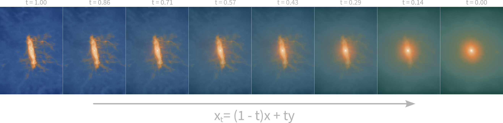
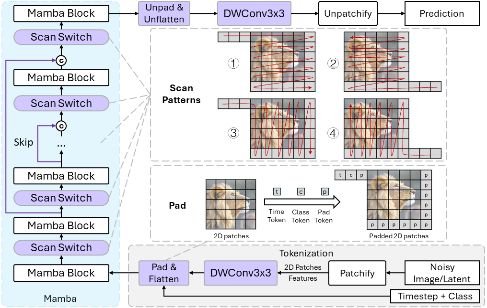

Generative AI for hydrodynamical simulations:
2D, 3D, or 6D galaxy models?SKA research at
Zurich University of Applied Sciences (ZHAW)
Centre for Artificial Intelligence (CAI)
Institute for Business Information Technology (IWI)
June 10, 2024
 Philipp Denzel, Frank-Peter Schilling, Elena Gavagnin
Philipp Denzel, Frank-Peter Schilling, Elena Gavagnin
2D, 3D, or 6D galaxy models?SKA research at
Zurich University of Applied Sciences (ZHAW)
Centre for Artificial Intelligence (CAI)
Institute for Business Information Technology (IWI)
Zurich University of Applied Sciences (ZHAW)
Institute for Business Information Technology (IWI)
Philipp Denzel, Frank-Peter Schilling, Elena Gavagnin
Slides on my website
Outlook
Recap:
Generative models
for map-to-map translation
Dataset from IllustrisTNG
- projected IllustrisTNG galaxies
- 6 domains:
- dark-matter, stars, gas,
HI, temperature, magnetic field
- dark-matter, stars, gas,
- ∼ 2'000 galaxies, (across 6 snapshots)
- ∼ 360'000 images
- each galaxy \(\ge\) 10'000 particles
- augmented: up to 5x randomly rotated
- scale: 2 dark-matter half-mass radii

Dataset from IllustrisTNG
- projected IllustrisTNG galaxies
- 6 domains:
- dark-matter, stars, gas,
HI, temperature, magnetic field
- dark-matter, stars, gas,
- ∼ 2'000 galaxies, (across 6 snapshots)
- ∼ 360'000 images
- each galaxy \(\ge\) 10'000 particles
- augmented: up to 5x randomly rotated
- scale: 2 dark-matter half-mass radii

Generative model architectures
Benchmark of generative models we're investigating and comparing:
- cGANs: lackluster results (see previous talk)
- Score-based diffusion models: promising results but really slow
- InDI models: more efficient at inference?
- Diffusion Mamba: the latest and greatest?
cGANs

Figure 1: pix2pix scheme
Figure 2: cGAN(Gas) → DM: data, prediction, and ground truth (from top to bottom)
Score-based diffusion (SDM)
Figure 3: Score-based diffusion: Song et al. (2021)
Noise schedule

Inversion by Direct Iteration (InDI)

Figure 4: InDI's iteration scheme following Delbracio & Milanfar (2023)
Diffusion Mamba (DiM)

Figure 5: DiM architecture Teng et al. (2024)
From 2D to 3D models
- observations inherently have 2D spatial resolution
- astrophysical structures are inherently 3D
- modelling difficulties:
- inherent 3D features, different 2D perspectives
- degeneracies
- computational costs, …
Inherent 3D shapes
Degeneracies

Point-cloud models for 3D modelling
Data type: point cloud
| x | y | z | [Mass] | [E] |
|---|---|---|---|---|
| 4 | 8 | 1 | - | - |
| 5 | 1 | 6 | - | |
| 2 | 3 | 4 | 2 | - |
| 3 | 4 | 3 | 5 | - |
| 5 | 9 | 1 | 3 | - |
| 9 | 6 | 9 | 4 | - |
| … | … | … | … | - |
For Cosmological Inference
Figure 6: Anagnostidis et al. (2022)
For Emulation of DM simulations (Quijote)
Figure 7: Cuesta-Lazaro & Mishra-Sharma (2023)
Experiments using transformers
- AdaPoinTr architecture
- Task: point cloud "completion"
- Limitations:
- input: max. ~10'000 particles
- output: max. ~16'000 particles
⟶ Iterative generation
⟶ subsampling input
- by Master student: Raphael Emberger
The "Good"

Figure 8: AdaPoinTr (Yu et al. 2023) on TNG50 galaxies: DM → gas
Figure 9: Radial profiles of particle numbers
The "Bad"
Figure 10: AdaPoinTr (Yu et al. 2023) on TNG50 galaxies: DM → gas
Figure 11: Radial profiles of particle numbers
The "Ugly"
Figure 12: AdaPoinTr (Yu et al. 2023) on TNG50 galaxies: DM → gas
Figure 13: Radial profiles of particle numbers
Towards "Phase-space-point" models
- expand feature vector to: mass, momenta/velocities, potential, …
- problems:
- already barely computationally tractable
more particles needed for accuracy
⟶ optimization: quantization, pruning, data parallelism, sharding, …
⟶ better subsampling strategies
⟶ self-consistency checks? regularizations?
Contact
Email: philipp.denzel@zhaw.ch
References
- SDM: Song et al. (2021)
- InDI: Delbracio & Milanfar (2023)
- DiM: Teng et al. (2024)
- PointNet for summary statistics: Anagnostidis et al. (2022)
- Point cloud generation for galaxy surveys: Cuesta-Lazaro & Mishra-Sharma (2023)
- AdaPoinTr architecture: Yu et al. (2023)
- Cosmology from point clouds: Chatterjee & Villaescusa-Navarro (2024)